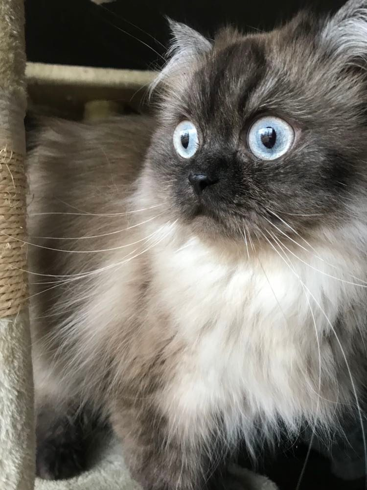
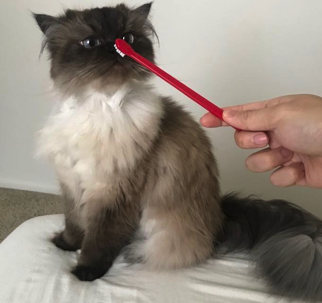
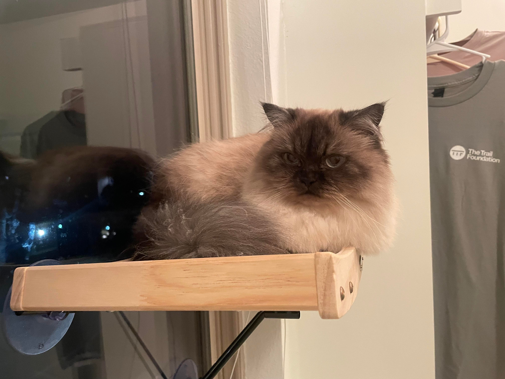
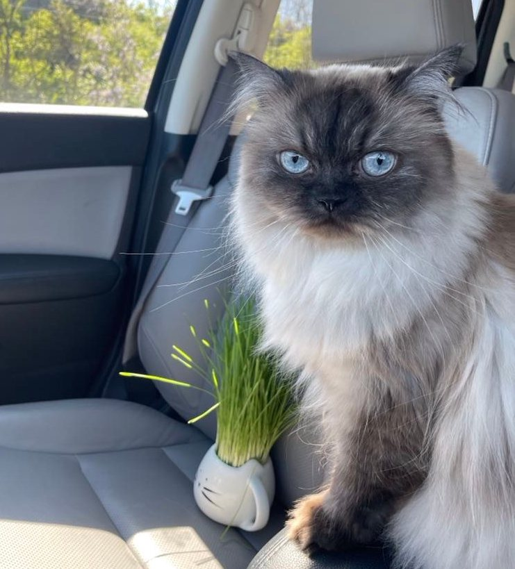
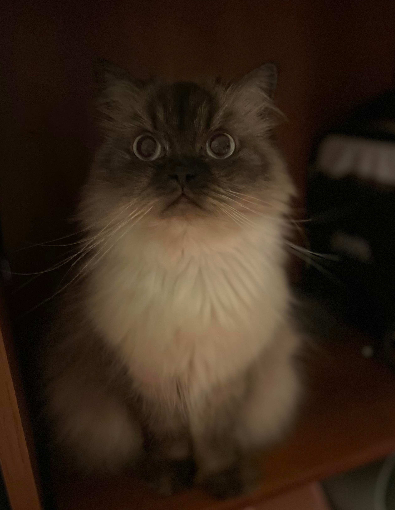

I was born in Ohio. I am 5 years old and currently
live Austin, TX

Live of Xinbao

Time to brush teeth!

Hi!

Me and my plant!

My professional picture!
“Owners of dogs will have noticed that, if you provide them with food and water and shelter and
affection, they will think you are God. Whereas owners of cats are compelled to realize that, if you
provide them with food and water and affection, they draw the conclusion that they are God.”
– Christopher Hitchens
Keep it updated with cat News!
Sign up for weekly newsletter by cliking that button right over there!